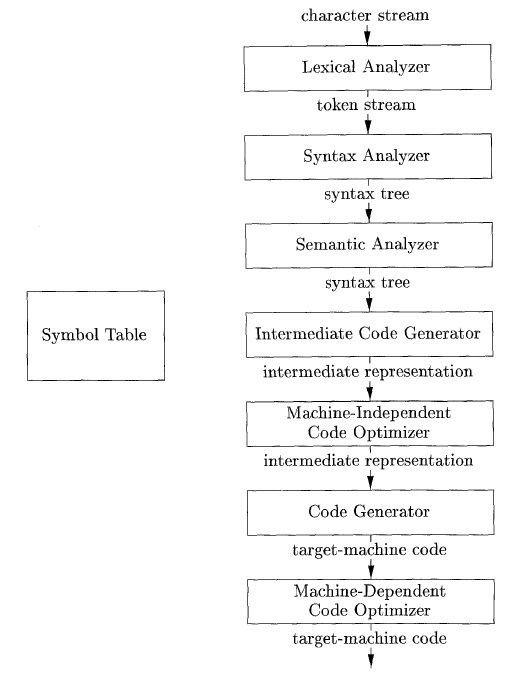

- COMMENTS:
1 Introduction
1.1 Language Processors
- Figure 1.5: A language–processing system p27
|-------------| modified |-------------| target
source ==> |Preprocessor | ==> source ==> | Compilier | ==> assembly
program |-------------| program |-------------| program
||
vv
library files |---------------| |--------------|
relocatable ==> | Linker/Loader | <== relocatable <== | Assembler |
obiect files |---------------| machine code |--------------|
||
vv
target machine code 1.2 The Structure of a Compiler
- Two parts to mapping: analysis (front end) and synthesis (back end)
- Figure 1.6: Phases of a compiler
